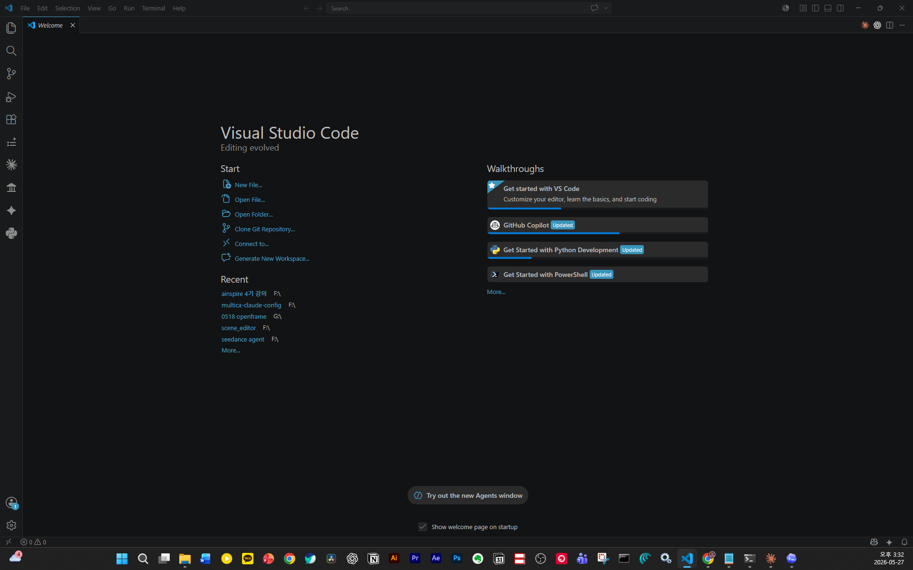

세 모드 모두 같은 Claude 모델이 움직입니다. 차이는 그 모델에게 어떤 도구와 권한을 주느냐입니다. Chat은 대화로만 답하고, Cowork와 Code는 내 컴퓨터의 파일을 읽고 명령을 실행합니다. Cowork는 Code의 실행 능력을 터미널 대신 일반 사용자용 화면에 담은 모드입니다.
구분작동 환경실행 능력과 주요 작업
Chat웹 브라우저, 데스크톱 앱실행 ✗ 파일 접근 권한 없음. 질문 답변, 글쓰기, 번역과 요약
Cowork데스크톱 앱실행 ✓ 승인을 거쳐 파일과 앱 조작. 파일 정리, 데이터 추출, 문서 자동화
Code터미널, 데스크톱 앱 패널실행 ✓ 명령 실행과 파일 편집. 리팩토링, 디버깅, 빌드와 PR 생성
Chat
대화형 어시스턴트
파일을 직접 건드리지 않는 텍스트 모드. 글쓰기, 번역, 아이디어 정리, 개념 질문에 쓴다.
무료 플랜도 사용 가능
Cowork
업무 자동화 에이전트
허용한 폴더의 파일을 직접 읽고 쓰는 화면형 에이전트. 자료에서 데이터 뽑기, 파일 일괄 정리와 이름 변경, 양식에 맞춘 문서 작성처럼 코딩 없이 하는 실무를 맡는다.
Pro ($20/월) 이상 · 작업 전 승인을 거침
Code
개발용 에이전트
코드 수정, 빌드, 테스트, Git 작업까지 직접 실행하는 개발 전용 에이전트. 여러 작업을 동시에 돌려 디버깅과 리팩토링을 맡긴다.
VSCode는 가장 널리 쓰이는 무료 코드 편집기입니다. 여기에 GitHub Copilot뿐 아니라 Codex 확장, Claude 확장도 설치해 함께 쓸 수 있습니다.

1
2
3
4
5
6
7
8
1
Explorer — 프로젝트 파일·폴더 탐색기
2
Search — 파일 검색
3
Source Control — Git 변경사항 확인·커밋·브랜치 관리
4
Run & Debug — 코드 실행 및 디버깅
5
Extensions — 확장 설치 관리 (여기서 GitHub Copilot 설치)
6
GitHub Copilot ✦ — Copilot 채팅·에이전트 패널 열기
7
Copilot 상태 아이콘 (우상단) — 연결 상태·플랜 확인·설정 바로가기
8
GitHub Copilot 시작 가이드 — 인라인 제안·채팅·에이전트 모드 사용법 안내
Free
무료
완성 2,000회/월
Pro
$10/월
무제한 완성
Pro+
$39/월
멀티모델 선택
Selection Guide
나에게 맞는 툴 선택
지금 당장 무료로 시작하고 싶다
→ VSCode + Copilot Free
Free 무료 · Pro $10/월 · Pro+ $39/월
Gemini 구독 중이다
→ Google Antigravity
Free $0(프리뷰·한도 축소) · AI Pro $20/월 · AI Ultra $200/월
ChatGPT 구독 중이다
→ OpenAI Codex
ChatGPT Plus $20/월에 포함 · Pro $100~$200/월
Claude 구독 중이다
→ Claude 데스크탑
Free $0 · Pro $20/월 · Max $100~$200/월
Workflow Difference
나에게 맞는 툴 선택 2
파일을 보면서 할까, 일을 다 시키고 확인할까
VS Code / Cursor
파일 트리 + 편집기 중심
화면의 중심
Explorer, 편집기 탭, 터미널이 계속 보입니다. 사용자가 파일 구조를 직접 훑습니다.
작업 방식
“이 파일 열고 여기 고쳐줘”처럼 내가 파일을 지정하고 AI에게 보조를 맡깁니다.
잘 맞는 사람
폴더 구조를 보며 세밀하게 통제하고 싶은 사람, 코드를 직접 읽고 비교해야 하는 사람.
Claude · Codex · Antigravity
목표 입력 + 위임·리뷰 중심
화면의 중심
상시 파일 트리보다 작업 입력창, 프로젝트 선택, 변경사항 리뷰가 중심입니다.
작업 방식
“이 폴더 정리해줘”처럼 목표를 말하면 AI가 필요한 파일을 찾아 처리하고, 사용자는 결과를 확인하는 위임형입니다.
잘 맞는 사람
코딩뿐 아니라 문서, 이미지, 로컬 파일 정리까지 AI에게 맡기고 결과를 검토하고 싶은 사람.
핵심: Claude와 Codex도 파일을 읽고 수정할 수 있습니다. 다만 VS Code처럼 파일 트리를 상시 펼쳐놓고 직접 조작하는 UI가 아니라, 목표를 말하면 AI가 필요한 파일을 찾아 작업하고 사용자는 결과를 확인하는 구조입니다.
Core Concept
토큰·컨텍스트·구독은 어떻게 연결되나
토큰이 기본 단위, 컨텍스트는 한 번에 보는 양, 구독은 그 소비량의 한도입니다.
세 가지 개념
1
토큰: 모델이 읽고 쓰는 최소 단위(대략 단어 조각)입니다. 입력과 출력이 모두 토큰으로 계산됩니다.
2
컨텍스트: 모델이 한 번 답할 때 동시에 보는 전체 — 지금까지의 대화 + 첨부 파일 + 이번 질문입니다. 이것이 곧 입력 토큰이 됩니다.
3
구독: 토큰을 직접 사는 것이 아니라, 이 소비량을 일정 시간 안에서 쓸 수 있는 사용량 한도로 관리하는 방식입니다.
왜 “월 N토큰”으로 못 박나
구분
내용
단위 자체
토큰 묶음을 파는 상품이 아니라 사용량(%) 한도로 관리하므로, 공개된 월 토큰 숫자 자체가 없습니다.
소비량 변동
대화가 길수록·모델이 클수록(Opus>Sonnet)·출력이 길수록 1회 소비량이 달라, 고정 토큰으로 환산할 수 없습니다.
출처: Anthropic 토큰·컨텍스트 윈도우 문서. 2026년 5월 기준.
‘컨텍스트 윈도우’와 ‘사용량 한도’는 다른 개념입니다. 컨텍스트 윈도우는 한 대화에 담을 수 있는 최대 크기이고, 사용량 한도는 일정 시간 안에 쓸 수 있는 총량입니다. 다음 장에서 그 한도가 어떻게 적용되는지 봅니다.
Usage Limits
한도는 시간 창으로 적용됩니다
5시간·주간 두 가지 창으로 관리되며, 구독 포함분에는 월간 제한이 없습니다.
한도가 적용되는 창
1
5시간: 첫 메시지를 보낸 시점부터 시작되는 롤링 창입니다. 소진되면 리셋 시각까지 기다립니다.
2
7일(주간): 일주일 단위 창입니다. Max는 전체 모델용과 Sonnet 전용으로 주간 한도가 두 개 적용됩니다.
3
월간: 구독 포함 사용량에는 없습니다. ‘월간 상한’은 초과 사용(extra usage) 크레딧을 켰을 때 그 추가 지출에만 적용됩니다.
플랜별 상대 한도
플랜
한도
Free
무료, 제한적으로 제공됩니다.
Pro
월 $20 또는 연 $200. 표준 사용량.
Max 5x
월 $100. Pro 대비 세션당 5배.
Max 20x
월 $200. Pro 대비 세션당 20배.
출처: Claude Help Center “Choose a Claude plan”, “What is the Max plan?”, “Manage extra usage”. 2026년 5월 기준.
남은 양은 토큰 개수가 아니라 사용량 %로 보입니다. 사용량 화면(또는 데스크톱 사용량 표시기)에서 5시간·7일 한도와 다음 리셋 시각을 직접 확인할 수 있습니다.
Pricing Logic
Codex 요금은 토큰 종류별로 다르게 계산된다
Plus 월 $20과 Codex 토큰 환산은 같은 개념이 아닙니다. 공식값과 계산 예시를 분리해서 봐야 합니다.
논리 구조
1
Plus 가격: ChatGPT Plus는 월 $20 구독입니다.
2
Codex 과금: Codex는 메시지 수가 아니라 input, cached input, output 토큰 비율로 credit 사용량이 달라집니다.
3
달러 환산: GPT-5.5 API 가격을 기준으로 보면 input $5/100만, cached input $0.50/100만, output $30/100만 tokens입니다.
4
주의: Plus $20이 그대로 API $20 크레딧이라는 뜻은 아닙니다. 실제 Codex 앱은 5시간/주간 사용량 퍼센트로 한도를 보여줍니다.
$20어치로 단순 환산하면
토큰 종류
GPT-5.5 API 가격
$20 환산
일반 input
$5 / 100만
약 400만 tokens
cached input
$0.50 / 100만
약 4,000만 tokens
output
$30 / 100만
약 66.7만 tokens
출처: OpenAI Help “What is ChatGPT Plus?”, OpenAI Codex rate card, OpenAI API model pricing for GPT-5.5.
강의 표현: “$20 기준으로 단순 환산하면 일반 input 약 400만 tokens, output 약 66만 tokens 규모다.”
단, 이것은 API 가격 기준의 비용 감각입니다. Plus 플랜에서 Codex가 정확히 그만큼 보장된다는 뜻은 아니며, 실제 사용량은 모델·컨텍스트 길이·캐시 비율·출력량·작업 복잡도에 따라 달라집니다.
결론
정리하면, 이렇게
1
성능 — 모델 성능 순위는 업데이트로 언제든 뒤집힙니다. 다만 현재 기준으로는 GPT-5.5와 Claude Opus 4.7(4.8)이 선두입니다.
2
요금 — 대부분 월 $20 안팎이면 시작합니다. Claude Pro $20 · ChatGPT Plus $20 · Gemini AI Pro $20 · Copilot Pro $10.
3
구독 기반 — 모두 구독제이므로, 이미 구독 중인 서비스가 있다면 그것을 그대로 써도 무방합니다.